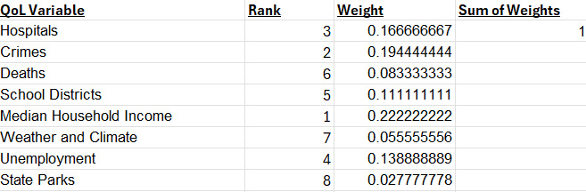
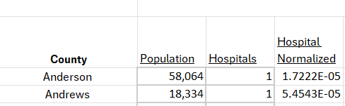
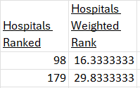
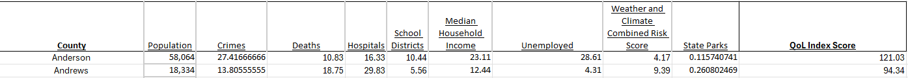

The calculation process followed four steps.
The quality of life index score for each Texas county was calculated using a multi-criteria decision-making equation. Each of the 8 variables factored in our equation were ranked and then given a weight based on their magnitude of importance respectively held in characterizing the quality of life in an area. A weight value for each of the variables was designated after group discussion. The weights for all variables would cumulatively sum to 1.
Steps 2-4 will include visuals of computations performed for Anderson and Andrews County as an example.
6 out of our 8 variables were counts, and these values for each county were normalized per capita. For each of these 6 variables, each Texas county--which there are 254 of--was given a rank from 1-254 based on its normalized value.
This ranked value would then be multiplied by the weight designated for the variable being measured. Therefore, values with a higher rank in this step of the calculation process would give more weight to a county.
Finally, each of the 8 weighted rank values for a county would then be summed up. The result would be the quality of life index score for that county. Counties with a higher quality of life index score would be considered better than those with a lower score. 